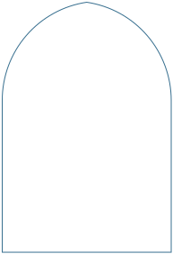
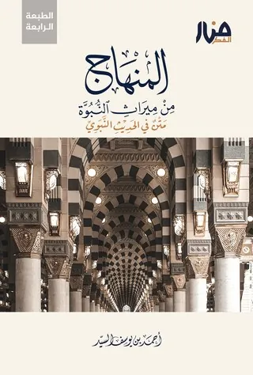
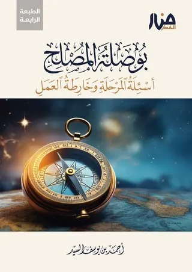
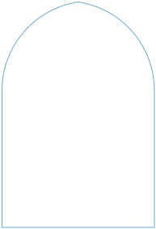
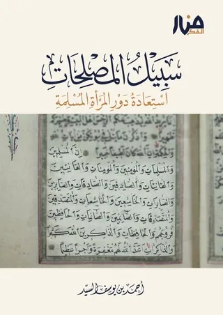
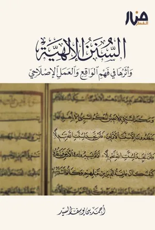
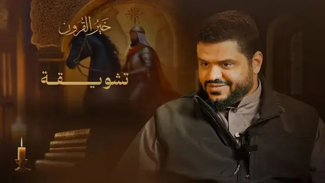

المواد المركزية
المواد المركزية
المواد المركزية هي المواد التي تضمنت أهم الأفكار الإصلاحية والتجديدية، ويُنصح بالعناية البالغة بهذه المواد لأهميتها في السياق الإصلاحي المعاصر


متن وشرح
01
متن المنهاج من ميراث النبوة وشرحه
التعريف
متن في الحديث النّبويّ، صُنّفت أبوابه بناءً على ما يحتاجه الشّاب المسلم المنشغل بالعلم والتّزكية والإصلاح.
سياق المادة
حكى النبي ﷺ عن المراحل التي ستمرُّ بها أُمَّته من بعده، وختم تلك المراحل بقوله: «ثم تكون خلافة على منهاج النبوة».
أهميتها
متن «المنهاج من ميراث النبوة» متن إصلاحي مقسّم على الأبواب، كالمعالِم لمنهاج النبوَّة، وكلُّ باب فيه استدلال بالآيات والأحاديث ليقوم البرهان على كل معلَم من المعالم.


سلسلة مرئية
02
سلسلة إحياء منهاج النبوة
التعريف
سلسلةٌ تجمع لك مكوّنات المنهج الإصلاحي وتعيد ترتيبها تحت ثلاث مظلات كبرى: التلقّي، والتربية، والإصلاح دعوةً وتمكينًا.
سياق المادة
وتحت كل مظلة منها معالم مركزية واضحة، مقرونة بشواهدها، مع قدر من الربط بالواقع؛ لتعينك على فهم أبعاد المنهج الإصلاحي.
أهميتها
لا إصلاح ولا تمكين على منهاج النبوة إلا بعد الفقه الصحيح لهذا المنهج، كما كان حال الجيل الأول.

كتاب
03
كتاب بوصلة المصلح
التعريف
يعتبر هذا الكتاب خلاصة أفكار المشروع الإصلاحي للشيخ أحمد السّيّد من خلال تأسيسه لمنهجيّة إصلاحيّة شاملة.
سياق المادة
تقوم في أساسها على واجب (صناعة المصلحين)، باعتباره واجب الوقت الذي ينبغي أن تتضافر جهود العاملين فيه.
أهميتها
يستند الكتاب في تقريراته على هدي الأنبياء الإصلاحي عبر ثنائية (عين على الوحي وعين على الواقع)، ويرسم خريطة العمل الكليّة الموجهة للإصلاح.


كتاب
04
كتاب سبيل المصلحات
التعريف
جَلّى فيه مؤلفه معالم التصوّر المنهجي لقضايا المرأة المسلمة، فجاء جامعاً بين التأصيل المتين والاستيعاب الواعي لمواطن الإشكال في هذا الباب.
سياق المادة
رام فيه معالجة طرفَي الانحراف في النظر إلى المرأة؛ إفراطاً من دعاة التغريب وتفريطاً من أرباب التشدّد، مستنداً إلى أدلة الوحيين.
أهميتها
دعوة راشدة إلى الارتقاء بالمرأة المسلمة فكراً وسلوكاً، ومعالجة دقيقة لواقعها، ومفتاح لفهم ما اختلط من أمرها على كثيرين.

كتاب وسلسلة
05
السنن الإلهية
التعريف
مادة فريدة مركزيّة، تتناول جانبًا عظيمًا من علم الكتاب والسنة؛ ساق الله لأجله قصص السابقين… إنه باب السنن الإلهية.
سياق المادة
في ظلّ المصائب العظيمة التي يعيشها المسلمون في هذا الزمن يحتاج المؤمن أن ينتقل من ضيق الأزمة إلى سعة الحكمة، وهذا يتحقق بالوعي بالسنن الإلهيّة.
أهميتها
بابٌ يزيدك فقهًا بالله، وفهمًا للتاريخ، وبصيرةً بالواقع؛ فهو علمٌ ينبغي لكل مصلح، بل لكل مسلم اليوم، أن يتقن النظر فيه.

سلسلة مرئية
06
خير القرون
التعريف
سلسلة علمية تربوية منهجية، تسرد وقائع القرون الثلاثة المفضّلة من وفاة النبي ﷺ إلى أواخر خلافة عثمان رضي الله عنه، ضمن عشرة أطر شاملة.
سياق المادة
تهدف السلسلة لتقديم رواية تاريخية موثوقة تُصحح التصورات حول السلف، وتُجلّي منهجهم في حمل الدين.
أهميتها
مادة مركزية لكل من يريد السير على منهاج النبوة بفهم صحيح ووعي عميق، تزيد اليقين بصحة المنهج السني.